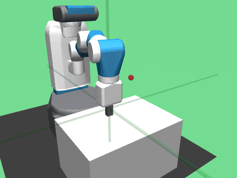

Skill
Fetch
Move the gripper to a target

Principles
- Key quantities
- gripper velocity \(v\)
- Approach speed
- \(v^*(e)=\frac{e}{\lVert e\rVert}\min\big(\sqrt{2a_{\text{brake}}\lVert e\rVert},\,\lVert e\rVert/t_{\text{settle}},\,v_{\max}\big)\): fast when far, slowing down on arrival
| Principle | When | Reference |
|---|---|---|
| Go to the target | always | \(v\to v^*(x_{\text{target}}-x')\) |
Primes mark the next state with no action; \(x\) is the gripper position and \(x_{\text{target}}\) the target. Start and target are random points in the region where the block and goals lie; \(a_{\text{brake}}\), \(t_{\text{settle}}\), \(v_{\max}\): planned braking, settling time and top speed, set roughly from what the arm can do.
Sample efficiency
Within 10,400 environment steps
- Success criterion
- all 100 evaluation episodes end within 5 cm of the target
- After 40,000 steps
- final distance 0.58 cm on average, 1.70 cm at most
Train it yourself
$ pip install -r requirements.txt
$ python fetch_move.py